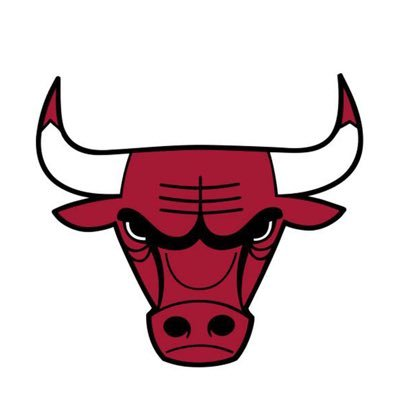

Bulls
The Chicago Bulls are an American professional basketball team based in Chicago. The Bulls compete in the National Basketball Association (NBA) as a member of the league's Eastern Conference Central Division.The team was founded on January 16, 1966, and played its first game during the 1966–67 NBA season.The Bulls play their home games at the United Center, an arena on Chicago's West Side shared with the Chicago Blackhawks of the National Hockey League (NHL).
The Bulls saw their greatest success during the 1990s when they played a major part in popularizing the NBA worldwide. They are known for having one of the NBA's greatest dynasties, winning six NBA championships between 1991 and 1998 with two three-peats. All six of their championship teams were led by Hall of Famers Michael Jordan, Scottie Pippen, and coach Phil Jackson. The Bulls are the only NBA franchise to win multiple championships while never losing an NBA Finals series in their history.
The Bulls won 72 games during the 1995–96 NBA season, setting an NBA record that stood until the Golden State Warriors won 73 games during the 2015–16 NBA season. The Bulls were the first team in NBA history to win 70 games or more in a single season, and the only NBA franchise to do so until the 2015–16 Warriors.
Michael Jordan and Derrick Rose have both won the NBA Most Valuable Player Award while playing for the Bulls, for a total of six MVP awards. The Bulls share rivalries with the Cleveland Cavaliers, Detroit Pistons, Miami Heat and the New York Knicks. The Bulls' rivalry with the Pistons was highlighted heavily during the late 1980s and early 1990s.
Michael Jeffrey Jordan (born February 17, 1963), also known by his initials MJ, is a businessman and retired American former professional basketball player. He is the principal owner and chairman of the Charlotte Hornets of the National Basketball Association (NBA) and of 23XI Racing in the Nascar Cup Series. He played 15 seasons in the NBA, winning six championships with the Chicago Bulls. His biography on the official NBA website states: "By acclamation, Michael Jordan is the greatest basketball player of all time."He was integral in helping to popularize the NBA around the world in the 1980s and 1990s,becoming a global cultural icon in the process.Jordan played college basketball for three seasons under coach Dean Smith with the North Carolina Tar Heels. As a freshman, he was a member of the Tar Heels' national championship team in 1982. Jordan joined the Bulls in 1984 as the third overall draft pick, and quickly emerged as a league star, entertaining crowds with his prolific scoring while gaining a reputation as one of the game's best defensive players.His leaping ability, demonstrated by performing slam dunks from the free throw line in Slam Dunk Contests, earned him the nicknames "Air Jordan" and "His Airness". Jordan won his first NBA championship with the Bulls in 1991, and followed that achievement with titles in 1992 and 1993, securing a "three-peat". Jordan abruptly retired from basketball before the 1993–94 NBA season to play Minor League Baseball, but returned to the Bulls in March 1995 and led them to three more championships in 1996, 1997, and 1998, as well as a then-record 72 regular-season wins in the 1995–96 NBA season. He retired for a second time in January 1999 but returned for two more NBA seasons from 2001 to 2003 as a member of the Washington Wizards.Jordan's individual accolades and accomplishments include six NBA Finals Most Valuable Player (MVP) Awards, ten scoring titles (both all-time records), five MVP Awards, ten All-NBA First Team designations, nine All-Defensive First Team honors, fourteen NBA All-Star Game selections, three All-Star Game MVP Awards, three steals titles, and the 1988 NBA Defensive Player of the Year Award. He holds the NBA records for career regular season scoring average (30.12 points per game) and career playoff scoring average (33.45 points per game). In 1999, he was named the 20th century's greatest North American athlete by ESPN, and was second to Babe Ruth on the Associated Press' list of athletes of the century. Jordan was twice inducted into the Naismith Memorial Basketball Hall of Fame, once in 2009 for his individual career and again in 2010 as part of the 1992 United States men's Olympic basketball team ("The Dream Team"). He became a member of the FIBA Hall of Fame in 2015. One of the most effectively marketed athletes of his generation, Jordan is also known for his product endorsements. He fueled the success of Nike's Air Jordan sneakers, which were introduced in 1984 and remain popular today.Jordan also starred as himself in the 1996 film Space Jam. He became part-owner and head of basketball operations for the Charlotte Bobcats (now named the Hornets) in 2006, and bought a controlling interest in 2010. In 2014, Jordan became the first billionaire player in NBA history. With a net worth of $2.1 billion, he is the fourth-richest African American, behind Robert F. Smith, David Steward, and Oprah Winfrey.
 Zachary LaVine (born March 10, 1995) is an American professional basketball player for the Chicago Bulls of the National Basketball Association (NBA). He was selected in the first round of the 2014 NBA draft with the 13th overall pick by the Timberwolves. He is a two-time Slam Dunk Contest champion.
LaVine grew up in Washington, where he was honored as the state's top high school player. He played college basketball for the UCLA Bruins. After one season at UCLA, he entered the NBA after being named one of the top freshmen in the Pac-12 Conference. As a rookie with Minnesota, he won the league's Slam Dunk Contest, and was named to the NBA All-Rookie Second Team. In 2016, he became the fourth NBA player to ever win consecutive dunk contests.
Zachary LaVine (born March 10, 1995) is an American professional basketball player for the Chicago Bulls of the National Basketball Association (NBA). He was selected in the first round of the 2014 NBA draft with the 13th overall pick by the Timberwolves. He is a two-time Slam Dunk Contest champion.
LaVine grew up in Washington, where he was honored as the state's top high school player. He played college basketball for the UCLA Bruins. After one season at UCLA, he entered the NBA after being named one of the top freshmen in the Pac-12 Conference. As a rookie with Minnesota, he won the league's Slam Dunk Contest, and was named to the NBA All-Rookie Second Team. In 2016, he became the fourth NBA player to ever win consecutive dunk contests.